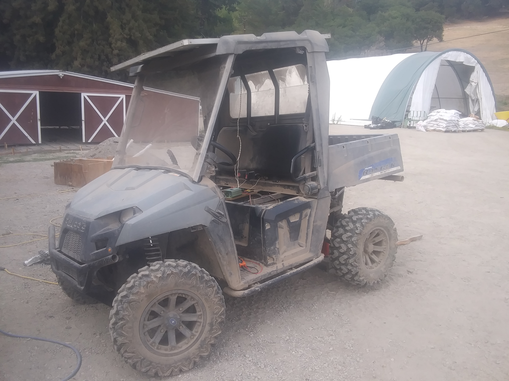
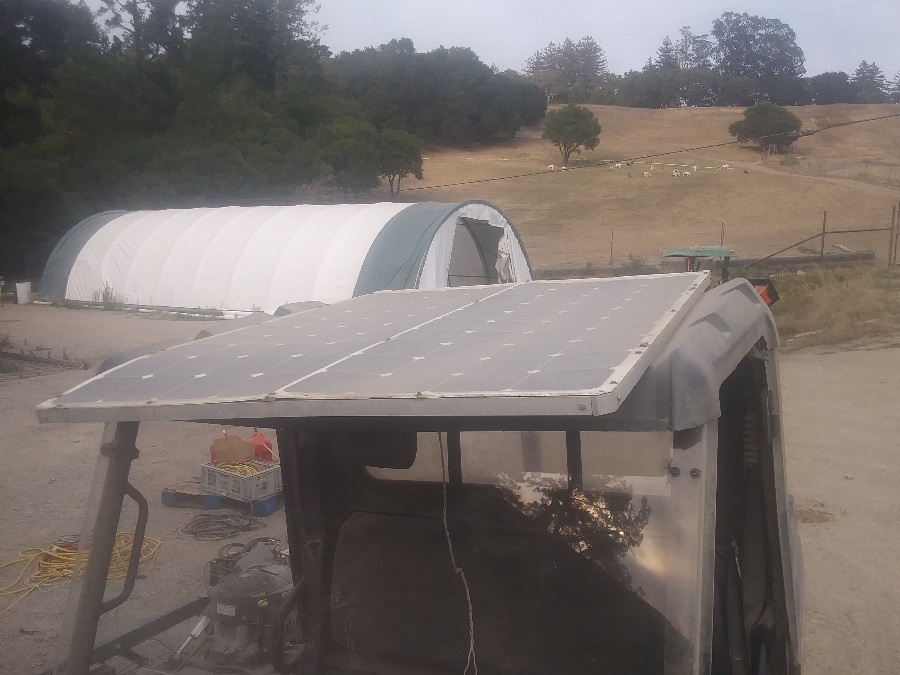
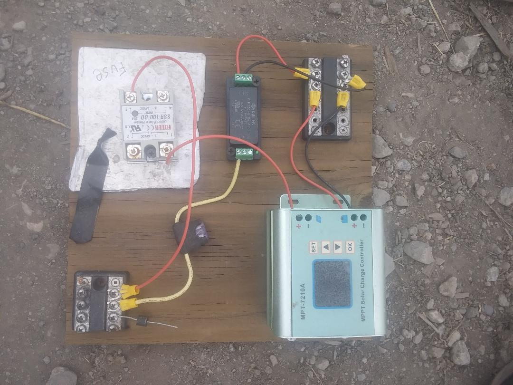
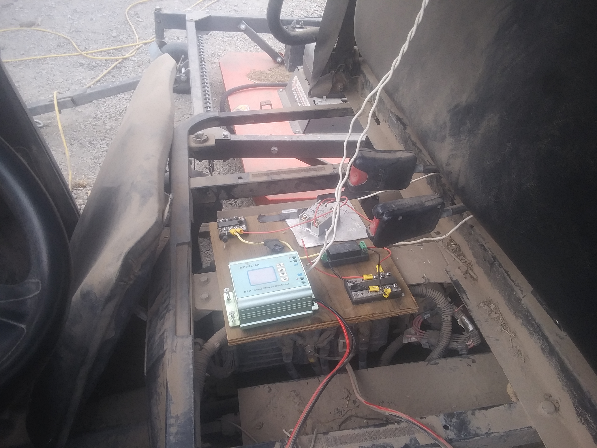
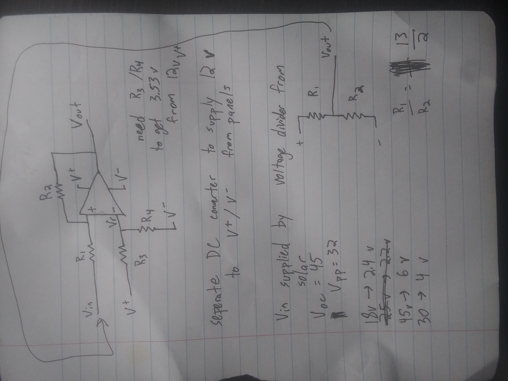
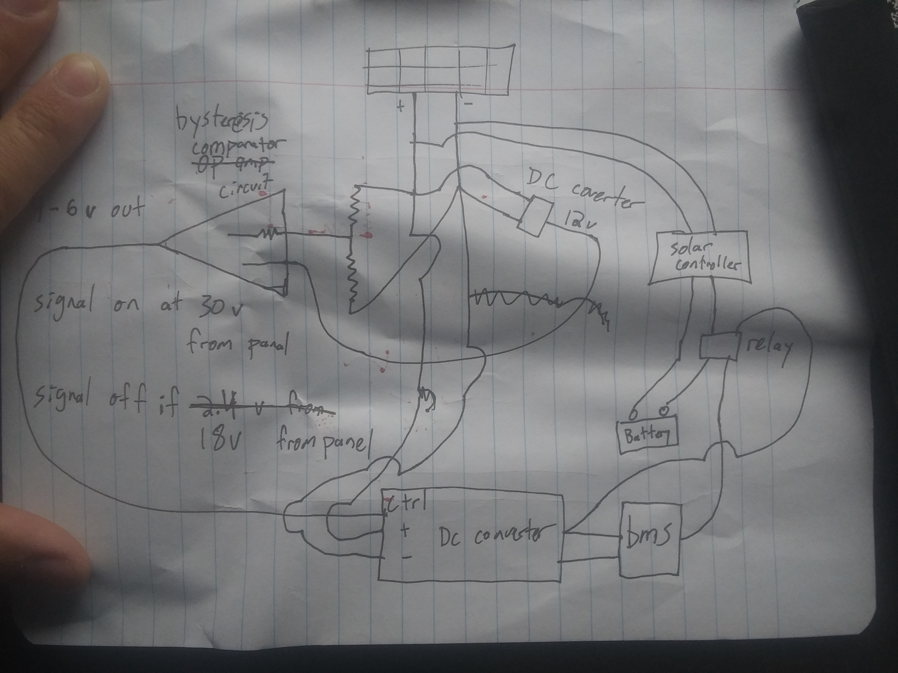
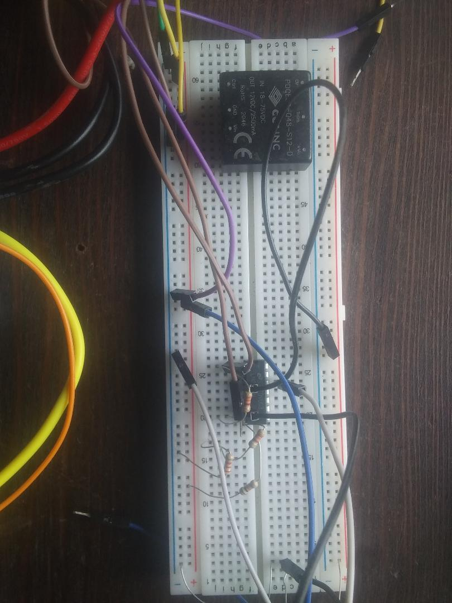

16 Apr 2021

I wanted to passively charge a Polaris Ranger EV from solar panels. Two 100 watt solar panels had been installed on top of the ranger from when the ranger originally had a lead-acid solar charging system. Running and charging lead-acid from solar is simple with a solar controller, but the ranger had already been converted to run off of a lithium battery, which meant it had a battery management system (BMS). I was using an Orion BMS Jr.. Powering the BMS was the crux of this problem.
In a lead-acid solar charging system, the three main components are the solar panels, solar controller, and lead-acid batteries. Here, the solar controller can be powered by the panels and only when they are producing energy. This system “just works” right off the shelf.
In a lithium solar charging system, there are four main components- the fourth being the BMS. The BMS must be powered when the battery is being charged or discharged through use. If the BMS isn’t on when the battery is charging, you risk the cells having different voltages or catching fire (which both shorten the life of the battery pack), and if the BMS is on all the time, you shorten the range and possibly risk damaging the batteries.
I decided I only wanted to power the BMS when the solar panels had an open-circuit voltage above a certain threshold to avoid the bad scenarios above. This turned out to be non-trivial, which led to a super fun learning experience and why I’m writing this post!
System hardware previously installed:
Originally, the ranger used a different solar controller for the lead-acid batteries, but when that didn’t work (3 charging cycles were too reserved for the lithium), I used this adustable solar controller for lithium
Other constraints:

I was able to achieve this using a combination of the following:
So here we take solar power (two 100 watt, 24v panels in series, so 0 - 56 volts), convert it to 24v to power the BMS. Now the BMS is sampling the battery and doing it’s job. When the BMS determines the battery should be charged, it toggles an output pin from float to ground. So I take that output control pin from the BMS and the 24v from the DC converter to use to signal the high-voltage relay. At this point, when the BMS is powered and pulls the output pin to ground, the relay closes. The relay will open and close the connection from the solar controller to the battery.

This approach worked in simple scenarios such as when the sun was shining (panels > 40v) or when it wasn’t, but I ran into two coupled issues:
In the first scenario, the BMS would turn on, then the panel voltage would be pulled below 9v, causing the BMS to turn off, so then the panels would go back above the DC converter threshold, causing the BMS to turn back on. And BMS state would continue to oscillate. The second scenario is similar. The BMS is on, indicates to charge, and relay closes, connecting the solar controller to the batteries. Then when the batteries start charging, they pull the panel voltage down (to under 9v), which in turn turns off the BMS. Once the BMS turns off and the batteries stop charging, the solar panel open-circuit voltage rises again, which triggers the BMS to turn on. And the cycle repeats with a period of about 1 second.

These issues indicated a need for hysteresis in the system.
My first instict would be to implement hystersis with software, but we’d run into similar issues because the computer running it would have to be powered.
Because the hysteresis had to be low power and resiliant to a flakey power source, I couldn’t use a software solution which would’ve relied on a bare minimum of powering a microcontroller.
I found a low-powered active circuit solution that relies on a comparator (or alternatively an op-amp). I used the LM339 and found this calculator useful. I don’t have a good intuition for how a comparator should behave, so I leaned heavy on trial and error with the calculator to find appropriate voltage and resistor values.

Hysteresis diagram

Full circuit diagram with hysteresis circuit
The goal of the comparator / hysteresis circuit is to differentiate ON vs OFF threshold voltage values. In my case, I wanted the BMS to turn on when the solar panel voltage was above 40v and turn off when it was below 10v. I found through experimentation that when the batteries were charging and panel voltage was just below 10v, the open-circuit voltage was below 40v, meaning these hysteresis parameters would eliminate the power cycling problem of the BMS when in partial sun and when the battery was connected to the solar controller / solar panels. I learned a few technical lessons through experimentation with the comparator:
Because the comparator consumed such low power, I used the battery to supply 24v to the comparator through a separate isolated DC converter. The BMS DC converter needs to be isolated because the auxiliary ground is different from the battery ground.
The BMS DC converter has an optional enable pin. Adding the hysteresis circuit between the solar panels (comparator signal input) and DC converter (comparator signal output) allowed the hysteresis circuit to control when the BMS is powered. Now, the power goes like this:

Breadboard with hysteresis circuit and DC converter to power the comparator
Now, this circuit worked as expected. The new issue was to harden the system to tolerate both vibration and mud, which is a lot less interesting to talk about.
Using solar as a switch and only powering the BMS when it was sunny may be an unneeded constraint. The BMS consumes only about 2 watts. A simpler solution is to power the BMS directly from the battery and take the power hit of 2 watts. The worse-case failure mode with this solution would be the possibility of draining and damaging the battery if it got too low. The benefit would be that the batteries would charge in times where the hysteresis circuit would prevent charging but when there was still some sun, notably around an open-circuit panel voltage of 30 - 40v.
I could’ve done more analysis before building and testing the more complicated hysteresis design, and maybe I would’ve decided to try this simple solution first. I was hesitant to go this route both because of the $2000 - $5000 battery replacement cost if they got damaged from over-discharge, and because I knew it’d be a great way to get better at circuit engineering and design. Ultimately, a lot of mistakes would have to align for the worse-case scenario to happen, as the ranger is generally stored and used outside in the sun everyday.
So prior to hardening the hysteresis solution, I decided to implement the simpler solution and power the BMS 24/7 from the battery and isolated DC converter. This solution reduces a lot of complexity but has a less desirable worse-case failure mode, even if it’s a remote possibility.
I think the hysteresis solution is the correct long-term product solution, but in this case, I think the corrent solution is the simple “power BMS 24/7”, both because long-term robustness and product at scale are not important considerations, and because I’ve already sunk too much time into this project.
Instead of hysteresis, I could’ve used a timer circuit, where the sun is the signal but power comes from the battery. This could reduce BMS power cycling when driving through shade, but when it’s still sunny elsewhere, and because the solar panels wouldn’t be powering the BMS, you would deal with the power oscillation.
Another thought we had at the beginning, prior to doing any building or testing, was to have a small lead-acid battery and seperate solar controller, and this would be used to power the BMS 24/7. This solution seemed terribly unelegant and sloppy; we have everything, power and signal, all right there! I wanted to jump to the most optimal solution. This turned out to be misguided thinking, not because I think it’s a great solution, but because I learned that Teslas carry a lead-acid battery! So I’m sure this solution wouldn’t have been too misguided to pursue. That was a humbling engineering lesson :)
Also, I should talk about testing the small auxillary solar panel idea. Provides power to BMS, but doesn’t get pulled down by battery. This solves the battery hysteresis issue, but not hysteresis when sun is 9v-14v because BMS pulls it down a little bit. But I was going to use it to power and signal just the hysteresis circuit.